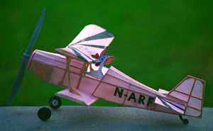

Model by Bruce Stinshoff
Here's a picture of my recently completed airplane. Fans of Saturday morning cartoons will obviously recognize the pilot as Pinky of Pinky and the Brain fame. Initial test flights have left something to be desired, but I hope to get out before the end of January and post some times. I may not win, but I believe I have built the pinkest of all the entrees.
Gee Brain, what do you want to do tonight? Same thing we've Gee Brain, what are we going to do tonight? Same thing we've been doing every night Pinky. Try to improve on these pathetic flight times! Seriously though, I'm quite happy with the flights so far, considering this is the first scale airplane, as well as the first Peanut, I've ever gotten to fly. It took quite a bit of doing to get Pinky to fly at all. Weather permitting, I'm confident I'll be able to improve on the times. It may be a while, however before we're ready to take over the freeflight world.
Best regards.
Bruce Stinshoff
Los Angeles